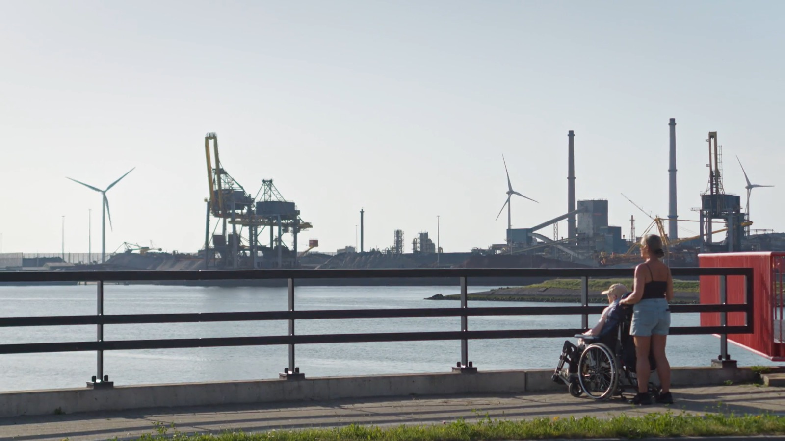

Ontwerpen aan onze toekomst

Hoe ontwerp je een toekomst die je nog niet kent? Nederland staat voor grote ruimtelijke en maatschappelijke uitdagingen. Water, natuur, landbouw, energie en wonen vragen allemaal om ruimte, terwijl de gevolgen van klimaatverandering en andere maatschappelijke ontwikkelingen steeds moeilijker te voorspellen zijn. Ontwerpend onderzoek kan helpen om die complexe vraagstukken vanuit een ander perspectief te bekijken. Door mogelijke toekomsten te verbeelden, maken ontwerpers zichtbaar welke keuzes we vandaag kunnen maken en welke gevolgen die kunnen hebben.
Ontwerpen aan onze toekomst verkent de mogelijkheden van ontwerpend onderzoek aan de hand van vijftig Nederlandse onderzoeken, verdeeld over vijf thema’s. De documentaire voert de kijker van het bodemleven en de toekomst van de landbouw naar de energietransitie, de woningbouw en de inrichting van een zorgzame leefomgeving. Concrete voorbeelden tonen hoe kaarten, maquettes, tekeningen en scenario’s nieuwe inzichten opleveren. Ze maken ingewikkelde vraagstukken bespreekbaar, brengen verschillende belangen samen en stellen bestaande denkpatronen ter discussie.
Maar ontwerpend onderzoek roept ook kritische vragen op. Welke aannames en waarden liggen aan de voorgestelde toekomstbeelden ten grondslag? Hoe onafhankelijk kunnen ontwerpers werken wanneer hun onderzoek in opdracht van overheden of andere organisaties gebeurt? En durven ze ook scenario’s te tonen die politiek of maatschappelijk ongemakkelijk zijn? Via gesprekken met ontwerpers, onderzoekers en beleidsmakers onderzoekt de documentaire niet alleen de kracht, maar ook de verantwoordelijkheid van de verbeelding. Want de toekomst ligt niet vast. Juist daarom is het belangrijk om verschillende mogelijkheden te onderzoeken en er samen het gesprek over aan te gaan.
- Concept, regie en eindredactie
- Bertrand Lafontaine
- Camera, klank en montage
- Tim Buhck (Always Hungry Productions)
- Kleurcorrectie
- Denise Eibel
- Soundmix
- Ina De Vos en Tim Buhck
- Wereldpremière AFFR Rotterdam · oktober 2026